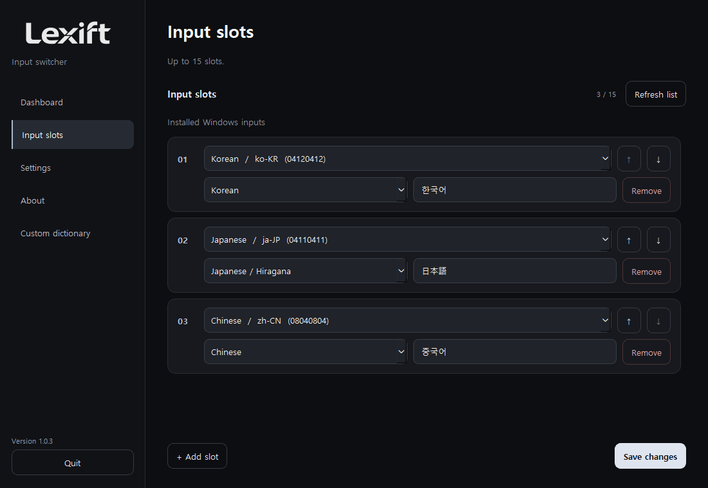
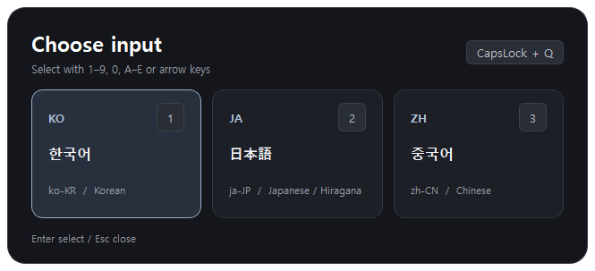
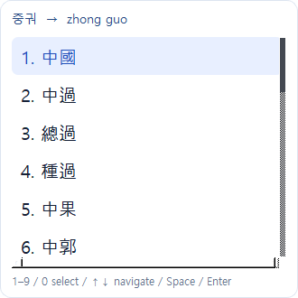
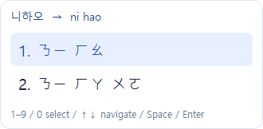
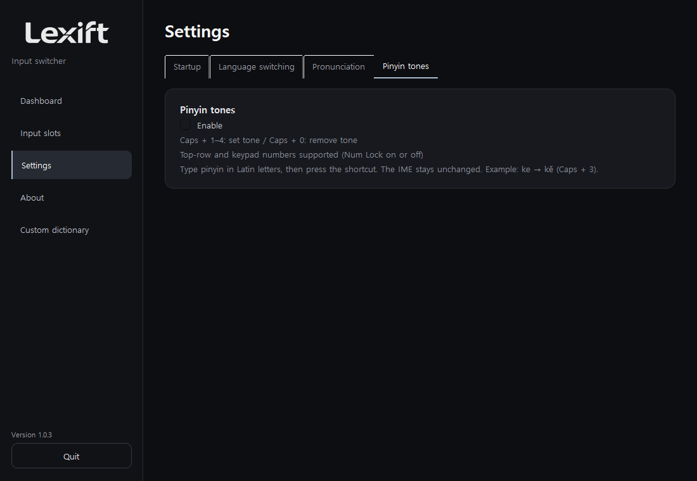
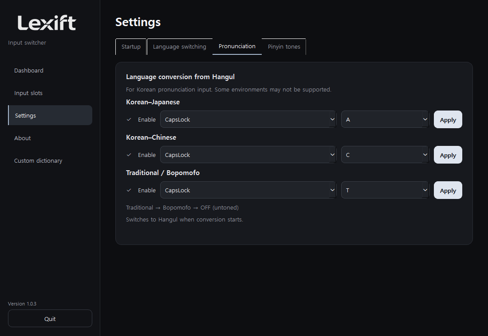
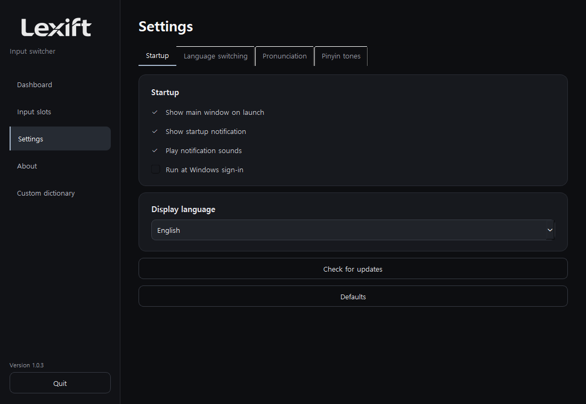
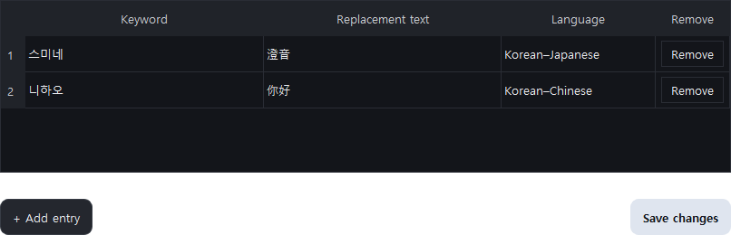

User guide
Overview
Switch input languages and type Japanese or Chinese with Hangul.
Windows 10/11, 64-bit.
Download 1.0.5 ↗Installation
Extract the ZIP and run Lexift.exe. Add the required input languages in Windows, then set them up under Input slots.

Input switching
Select with the arrows and Enter, or press a number.

Japanese input
Type the Japanese reading in Hangul: 와타시 → 私. Press again to turn it off.

↑↓ move / Space or Enter confirm / 1–9, 0 select / Esc close.
Turning on conversion switches to Hangul input.
Simplified Chinese
Type the Chinese reading in Hangul: 니하오 → 你好. Press again to turn it off.

Traditional / Bopomofo
Cycles through Traditional → Bopomofo → OFF. 중궈 → 中國 / 니하오 → ㄋㄧ ㄏㄠ. Bopomofo is shown without tone marks.


Pinyin tones
Enable Pinyin tones in Settings and type in Latin letters. ke + Caps + 3 → kě.
1–4: set tone / 0: remove tone. The keypad works with Num Lock on or off. Numbers select candidates while a candidate window is open.

Settings
Use the checkboxes to enable features. Click Apply after changing a shortcut. Duplicate shortcuts cannot be saved.


Defaults resets all settings and the custom dictionary.
Custom dictionary
Add missing words to the dictionary. Enter a keyword, replacement and language, then save. Example: 스미네 / 澄音 / Korean–Japanese. Use the Delete button on each row to remove an entry.

Troubleshooting
When running as administrator, updates open the download page. Run Lexift without administrator privileges or extract the ZIP into a new folder. Logs are saved when running without administrator privileges.
Shortcuts do not respond
Check that Lexift is running in the system tray. Enable the feature in Settings and click Apply. Change the shortcut if another app uses the same keys.
A language is missing from the switcher
Install the language and its input method in Windows Settings, then add it to Lexift’s input slots.
Typing Hangul shows no candidates
Turn on conversion and type in Hangul mode using the Korean input method. Japanese conversion requires Microsoft Japanese IME. Restart Lexift after installing an input method.
The Japanese engine keeps stopping
Extract the latest ZIP into a new folder and run it there. If it persists, open the error log in Settings → About and include the exit code in your report.
The word you need is missing
Add names and other custom terms to the user dictionary. For Japanese long vowels, use a hyphen (-): 코-죠- → こうじょう.
Arrow keys or Esc do not work in Caps + Q
Quit Lexift, extract the latest ZIP into a new folder and launch it there. Keep the module folder with the executable.
Tone marks are not applied
Enable Pinyin tones in Settings. In English input mode, type ke, then press Caps + 3. Close any candidate window first and place the cursor directly after the syllable.
Input fails in one app
Click the input field again and compare with Notepad. For administrator apps, quit Lexift and relaunch it as administrator. Password and other secure fields are unsupported.
Bug reports: include the app, Windows version and steps to reproduce.
GitHub Issues ↗